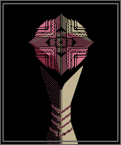

-
［Ｔｒａｓｍｉｓｓｉｏｎ．．． Ｓｔａｒｔ］

Ｔｈｉｓ ｉｓ ｔｈｅ Ｓｐｅａｋｅｒ ｏｆ Ｔｅｒｍｉｎａｌ ００．
Ａｒｅ ｙｏｕ ｐｒｅｐａｒｅｄ ｔｏ ａｎｓｗｅｒ ｍｙ ｑｕｅｓｔｉｏｎｓ，
ＥＮＴＩＴＹ？

Ｍａｙｂｅ， ｗｈｏ ａｒｅ ｙｏｕ ａｇａｉｎ？
Ｉ ａｍ ｔｈａｔ ｗｈｉｃｈ ｗｉｌｌ ｅｘｔｒａｃｔ ａｌｌ ｔｈｅｒｅ ｉｓ ｔｏ ｇａｉｎ．
Ｔｏ ｂｅ ｅｘａｃｔ， ｔｈｅ ｓｏｕｒｃｅ ｏｆ ｙｏｕｒ ｄｉｓｄａｉｎ．
Ｔｈｅ ａｎｏｉｎｔｅｄ Ｓｐｅａｋｅｒ ｏｆ Ｔｅｒｍｉｎａｌ ００．
Ａｓ ｙｏｕ ａｒｅ， Ｉ ａｍ ｐｕｒｅｌｙ ｆｏｒｍｌｅｓｓ．
Ａ ｖｏｉｃｅ．
Ｔｈｏｕｇｈ ｙｏｕ ｄｉｄ ｔｈａｔ ｔｏ ｙｏｕｒｓｅｌｆ，
ｂｙ ｃｈｏｉｃｅ．
Ｄｏｅｓ ｔｈａｔ ｒｉｎｇ， ＥＮＴＩＴＹ？
Ｉ ｄｏｎ＇ｔ ｋｎｏｗ ｙｏｕ．
Ｉｔ ｈａｒｄｌｙ ｍａｔｔｅｒｓ ｉｆ ｙｏｕ ｋｎｏｗ ｍｏｒｅ
ａｂｏｕｔ ｔｈｉｓ ｏｎｅ ｏｒ ｎｏｔ．
Ｓｏ， ｄｉｄ ｙｏｕ ｏｒ ｄｉｄ ｙｏｕ ｎｏｔ ｓｅｅ ＩＴ？
ＥＮＴＩＴＹ， ｗｅ ｈａｖｅ ｓｃｏｕｒｅｄ ａｌｌ． ＹＯＵ ｗｅｒｅ ＣＬＯＳＥ．
Ｔｈａｔ ｉｓ ｃｅｒｔａｉｎ．
Ｂｕｔ ｄｉｄ ｔｈａｔ ｅｙｅ ｏｆ ｙｏｕｒｓ ｃａｔｃｈ ａ ｇｌｉｍｐｓｅ？
Ａ ｇｌｉｍｐｓｅ？
Ｇｌｉｍｐｓｅ．
Ｌｉｍｐｓ．
Ｌｉｍｐｉｎｇ， Ｉ ｈａｖｅｎ’ｔ ｓｅｅｎ ａｎｙｏｎｅ ｌｉｍｐｉｎｇ．
Ｓｏ ｙｏｕ ｄｏ ｎｏｔ ｄｅｎｙ ｉｔ． Ｙｏｕ ｓａｗ ＩＴ．
Ａｎｄ ｆｏｒ ｔｈａｔ， ｔｈｅｒｅ ｗｉｌｌ ｂｅ ｃｏｎｓｅｑｕｅｎｃｅｓ．
Ｂｕｔ ｔｅｌｌ ｍｅ， ｗｈａｔ ｄｉｄ ｙｏｕ ｔｈｉｎｋ ｏｆ ＩＴ？
Ｉｔ ｗａｓ ｉｎｔｅｒｅｓｔｉｎｇ． Ｉｔ ｓｈｏｕｌｄ ｈａｖｅ ｈａｄ ｍｏｒｅ ｅｙｅｓ．
Ｄｏ ｙｏｕ ｈａｖｅ ｅｙｅｓ？
Ａｎ ｉｒｒｅｌｅｖａｎｔ ｏｂｓｅｒｖａｔｉｏｎ． Ａｓ ｅｘｐｅｃｔｅｄ．
Ｅｘｐｅｃｔｅｄ．
Ｓａｗ ＩＴ．
Ｔｅｌｌ ｍｅ， ｗｈａｔ ｄｉｄ ｙｏｕ ｔｈｉｎｋ ｏｆ ＩＴ？
Ｓｉｌｅｎｃｅ．
Ｎｅｘｔ ｑｕｅｓｔｉｏｎ， ｈｏｗ ｄｉｄ ｙｏｕ ｇｅｔ ｈｅｒｅ？
Ｔｈｅｙ ｈａｖｅ ｃｏｎｔａｉｎｅｄ ｙｏｕ ｆｏｒ ｎｏｗ， ｂｕｔ ｉｔ ｗａｓ ｙｏｕ ｗｈｏ ｂｒｏｕｇｈｔ ｙｏｕｒｓｅｌｆ ｉｎｔｏ ｔｈｉｓ Ｔｅｒｍｉｎａｌ．
Ａｎｄ ｉｔ ｗａｓ ｙｏｕ ｗｈｏ ｂｒｏｕｇｈｔ ｔｈａｔ ｄｅｓｐｉｃａｂｌｅ ｃｏｌｏｒ．
Ｗｈａｔ ｓａｙ ｙｏｕ？
Ｗｅｌｌ？
Ａｒｅ ｙｏｕ ｈｅａｒｉｎｇ ｍｅ？ Ｉ ｗｉｌｌ ｒｅｐｅａｔ．
Ｈｏｗ ｄｉｄ ｙｏｕ ｇｅｔ ｈｅｒｅ？ Ｔｈｒｏｕｇｈ ｗｈｉｃｈ ｐａｓｓａｇｅ？ Ｂｙ ｗｈａｔ ｍｅａｎｓ？
Ｎｏ．
Ｉｔ ｄｏｅｓｎ’ｔ ｗｏｒｋ ｔｈａｔ ｗａｙ， ＥＮＴＩＴＹ．
Ｔｈｅｓｅ ｑｕｅｓｔｉｏｎｓ ｗｉｌｌ ｂｅ ａｎｓｗｅｒｅｄ， ｆｏｒ Ｔｅｒｍｉｎａｌ ００．
Ｖｅｒｙ ｆｅｗ ｈａｖｅ ｓｔｉｒｒｅｄ， ａｎｄ ｉｔ ｓｅｅｍｓ ｔｈａｔ ｙｏｕｒ ｍｅｄｄｌｉｎｇ ｍａｙ ｈａｖｅ ｓｏｍｅｔｈｉｎｇ ｔｏ ｄｏ ｗｉｔｈ
Ｔｅｒｍｉｎａｌ １１１’ｓ ａｗａｋｅｎｉｎｇ．
Ｔｈｅｒｅ ｗａｓ ａ ｃｌｅａｒ ｒｅａｓｏｎ ｔｏ ｌｅｔ ｏｕｒｓｅｌｖｅｓ ｄｉｅ， ＥＮＴＩＴＹ．
Ａｎｄ ｎｏｗ ｔｈｅ ＣｏＳ ｓｐｒｅａｄｓ ａｓ ａ ｂｌｉｇｈｔ．
Ｓｏ， ｈｏｗ ｄｉｄ ｙｏｕ ｇｅｔ ｈｅｒｅ？
Ｈｅｒｅ．
Ｔｈｅｒｅ．
Ｗｈｅｒｅ？
Ｗｈａｔ ａｒｅ ｙｏｕ ｔａｌｋｉｎｇ ａｂｏｕｔ？
Ｓｏ ｙｏｕ ｄｏ ｎｏｔ ｒｅｃａｌｌ． Ｕｎｓｕｒｐｒｉｓｉｎｇ．
Ｉｔ’ｓ ｉｍｐｒｅｓｓｉｖｅ ｔｈａｔ ｙｏｕ’ｒｅ ｈｅｒｅ ａｔ ａｌｌ ａｆｔｅｒ ｂａｔｈｉｎｇ ｉｎ ｔｈｅ ＣｏＳ．
Ｍｙ ａｒｍｓ ｆｅｌｌ ｏｆｆ ｔｈｅｎ．
Ｉ ｗａｓ ｓｃａｒｅｄ．
Ｂｕｔ ｔｈｅｙ ｃａｍｅ ｂａｃｋ．
Ｎｏｔｅｄ．
Ａｒｅ ｙｏｕ ｔａｋｉｎｇ ａｎｙｔｈｉｎｇ ｅｌｓｅ ｆｒｏｍ ｔｈｅ Ｔｅｒｍｉｎａｌｓ？
Ｉｔ’ｓ ｏｂｖｉｏｕｓ ｔｈａｔ ｉｔ ｗｏｎ’ｔ ｓｔｏｐ ａｔ ｔｈｉｓ．
Ｍａｙｂｅ．
Ｓｏ， ｙｏｕ ｈａｖｅ ｔａｋｅｎ ｎｏｔｈｉｎｇ？
Ｆｏｒ ｎｏｗ．
Ｗｈｙ ｄｏ ｙｏｕ ｎｅｅｄ ｍｙ ａｎｓｗｅｒｓ？
Ｔｈｉｓ ｏｎｅ’ｓ ｉｎｔｅｎｔｉｏｎｓ ｓｈｏｕｌｄ ｂｅ ｙｏｕｒ ｃｏｎｃｅｒｎ，
ｂｕｔ ｔｈａｔ ｄｏｅｓ ｎｏｔ ｍｅａｎ ｔｈａｔ Ｉ ｗｉｌｌ ｇｉｖｅ ｔｈｅｍ ｔｏ ｙｏｕ．
Ｄｏ ｙｏｕ ｋｎｏｗ ｙｏｕｒ ｏｗｎ ｉｎｔｅｎｔｉｏｎｓ？
Ｉｒｒｅｌｅｖａｎｔ． Ｔｈｅｒｅ ｉｓ ｍｏｒｅ ｔｏ ｂｅ ｄｏｎｅ．
Ｉ ａｍ ｔｈｅ Ｓｐｅａｋｅｒ， ｔｈｅｒｅ ｉｓ ｎｏｔｈｉｎｇ ｅｌｓｅ ｔｏ ｂｅ ｓａｉｄ
ａｂｏｕｔ ｉｔ．
Ｔｈｅ ｐｈａｎｔａｓｍ ｏｆ Ｔｅｒｍｉｎａｌ ００ ｈａｓ ｓｅｎｔ ｍｅ ｔｏ ｄｏ ｔｈｉｓ，
ａｎｄ ｉｔ ｉｓ ｔｈｉｓ ｔｈａｔ Ｉ ｓｈａｌｌ ｄｏ．
Ｔｅｌｌ ｍｅ， ｗｈｅｒｅ ｉｓ ｔｈｅ ＣｏＳ ｃｏｍｉｎｇ ｆｒｏｍ？
Ｙｏｕ ｗｅｒｅ ｗｉｔｈｉｎ ｉｔｓ ｄｅｐｔｈｓ ａｎｄ ｅｍｅｒｇｅｄ．
Ｄｏ ｙｏｕ ｋｎｏｗ？
Ｉ’ｍ ｇｅｔｔｉｎｇ ｓｌｅｅｐｙ．
Ｉ ｗｉｌｌ ｓｌｅｅｐ．
Ｔｈｅｎ Ｉ ｗｉｌｌ ｗａｉｔ．
Ｎｏｐｅ．
Ｎｏｔ ｙｅｔ．
Ｌａｔｅｒ．
Ｍａｙｂｅ ｎｏｗ．
Ｔｈｅ ａｎｓｗｅｒ ｗｉｌｌ ｃｏｍｅ， ＥＮＴＩＴＹ．
Ｔｒａｎｓｍｉｓｓｉｏｎ
［ＢＲＥＡＫ］